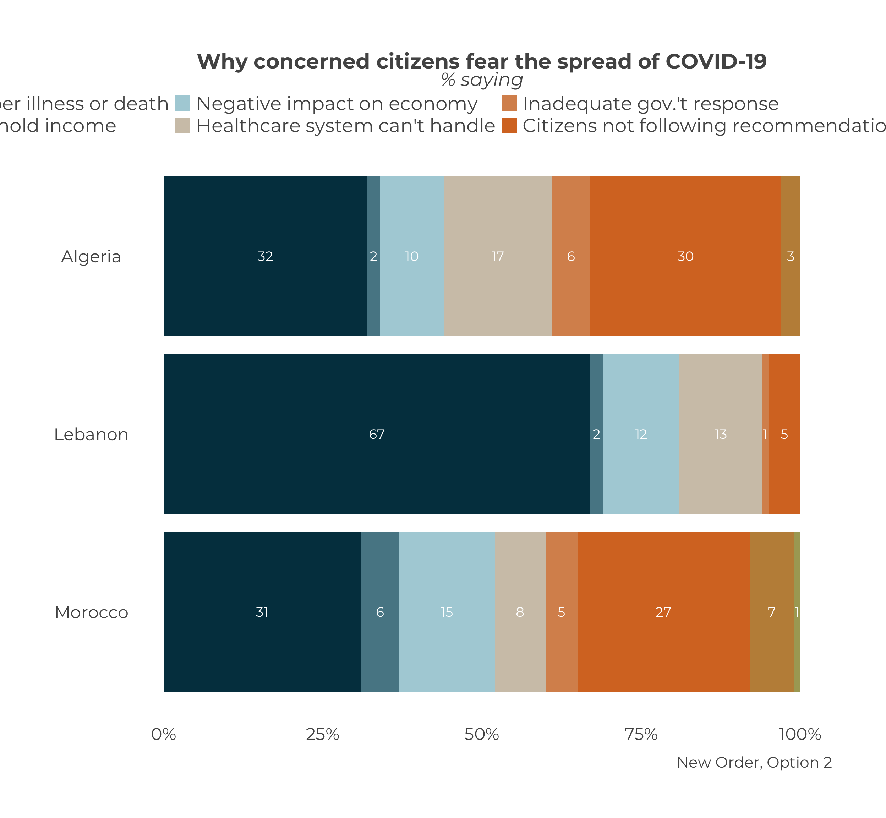

Chapter 22 Change the order of a stacked graph?
Changing the order of a stacked graph, like creating many graphs at once, is not done within ArabBarometR per se, but the process is relatively straightforward nonetheless.
For this example, let’s create a comparative stacked bar chart for Q2ACOVID19.
calculate_stacked_df(survey1,
"Q2ACOVID19") %>%
plot_stacked_comp(.caption = "Original Order")The order of the bars is determined by the factor level. You can see factor level in the data frame produced by the function calculate_stacked_df. The numbers are the factor levels, the words in brackets are the factor labels. In this example, you can see the factor levels are 1-7 and 666. The factor labels are the question response options.
calculate_stacked_df(survey1,
"Q2ACOVID19")## # A tibble: 48 × 3
## # Groups: Country [6]
## Q2ACOVID19 Country Percent
## <dbl+lbl> <chr> <dbl>
## 1 1 [Family member illness or death] Algeria 32
## 2 2 [Loss of household income] Algeria 2
## 3 3 [Negative impact on economy] Algeria 10
## 4 4 [Healthcare system can't handle] Algeria 17
## 5 5 [Inadequate gov.'t response] Algeria 6
## 6 6 [Citizens not following recommendations] Algeria 30
## 7 7 [Other] Algeria 3
## 8 666 [Don't know/Refuse] Algeria 0
## 9 1 [Family member illness or death] Jordan 31
## 10 2 [Loss of household income] Jordan 6
## # … with 38 more rowsInstead of leading with “Illness or death of a family member”, say we want to lead with “Inadequate gov.t response”. We need to change the factor levels. First, we’ll save the output of calculate_stacked_df to an object we can manipulate.
new_df <- calculate_stacked_df(survey1,
"Q2ACOVID19")To change the factor levels, we’ll use the recode function from the dplyr library. There are several ways you can use the recode function to re-order the factor levels. This guide will review two, and you can explore the rest on your own.
Move One Factor
If the goal is to move “Inadequate gov.t response”, whose factor level is 5, in front of “Illness or death of a family member”, whose factor level is 1, we have to choose a new factor level that comes before 1. There are infinite numbers before 1, so we’ll just go with 0.5 here.
new_df$Q2ACOVID19 <- dplyr::recode(
new_df$Q2ACOVID19, # The variable getting recoded
`5` = .5, # The old value to new value
.default = levels(new_df$Q2ACOVID19), # Use the original levels as a guide
.combine_value_labels = T # Keep the original levels for all other variables
)We can see the new value of the factor.
## # A tibble: 48 × 3
## # Groups: Country [6]
## Q2ACOVID19 Country Percent
## <dbl+lbl> <chr> <dbl>
## 1 1 [Family member illness or death] Algeria 32
## 2 2 [Loss of household income] Algeria 2
## 3 3 [Negative impact on economy] Algeria 10
## 4 4 [Healthcare system can't handle] Algeria 17
## 5 0.5 [Inadequate gov.'t response] Algeria 6
## 6 6 [Citizens not following recommendations] Algeria 30
## 7 7 [Other] Algeria 3
## 8 666 [Don't know/Refuse] Algeria 0
## 9 1 [Family member illness or death] Jordan 31
## 10 2 [Loss of household income] Jordan 6
## # … with 38 more rowsAnd now when we plot the recoded data frame.
new_df %>%
plot_stacked_comp(.caption = "New Order, Option 1")Swap Factors
An alternative way to move “Inadequate gov.t response” to the front is to swap positions with “Illness or death of a family member”. That is, make “Inadequate gov.t response” factor level 1 and “Illness or death of a family member” factor level 5. Again, we use recode from dplyr.
new_df$Q2ACOVID19 <- dplyr::recode(
new_df$Q2ACOVID19, # The variable getting recoded
`5` = 1, # The old value to new value
`1` = 5, # The old value to new value
.default = levels(new_df$Q2ACOVID19), # Use the original levels as a guide
.combine_value_labels = T # Keep the original levels for all other variables
)The new factor levels are:
## # A tibble: 48 × 3
## # Groups: Country [6]
## Q2ACOVID19 Country Percent
## <dbl+lbl> <chr> <dbl>
## 1 5 [Family member illness or death] Algeria 32
## 2 2 [Loss of household income] Algeria 2
## 3 3 [Negative impact on economy] Algeria 10
## 4 4 [Healthcare system can't handle] Algeria 17
## 5 1 [Inadequate gov.'t response] Algeria 6
## 6 6 [Citizens not following recommendations] Algeria 30
## 7 7 [Other] Algeria 3
## 8 666 [Don't know/Refuse] Algeria 0
## 9 5 [Family member illness or death] Jordan 31
## 10 2 [Loss of household income] Jordan 6
## # … with 38 more rowsFinally, we plot the new data frame.
new_df %>%
plot_stacked_comp(.caption = "New Order, Option 2")
The main take away here is that if you want to play around with the order of a stacked bar graph, it is best to familiarize yourself with recode.